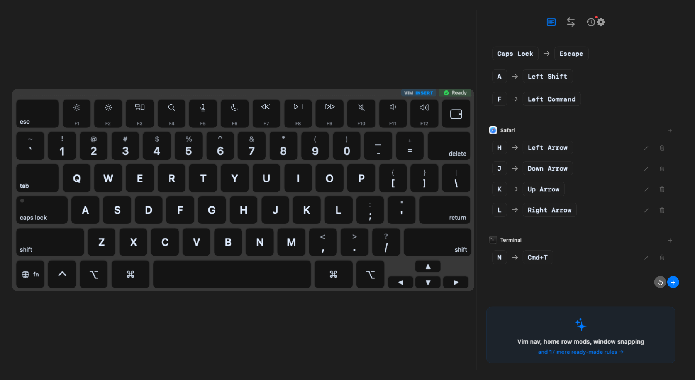
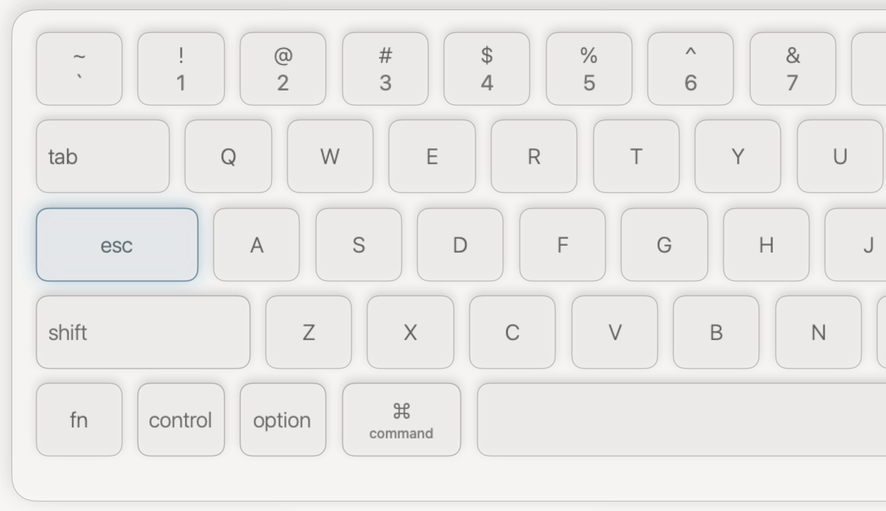

01 · explanation
The rule reads correctly
The visual model communicates the mapping and its scope.
KeyPath · physical systems
A visual test can show the idea. Only an independent keyboard fixture can prove what crossed the USB boundary.
Micah Alpern · Hacker Dojo


The trap
UI snapshots prove the explanation. Unit tests prove transformations. Neither proves the host received the intended key sequence at the intended timing.
Three different claims
01 · explanation
The visual model communicates the mapping and its scope.
02 · software
Focused tests and overlays agree about the transformation.
03 · boundary
An external fixture records expected text, received text, timing, and release.
The real product surface
KeyPath shows the keyboard, the trigger, and the output together. The testing story follows the same principle: every layer needs visible evidence.
Fixture loop
Evidence taxonomy
| Result | What it establishes | What it does not establish |
|---|---|---|
| Snapshot passes | Layout and explanation remain stable | USB emission or timing |
| Focused software tests pass | Transformation logic matches the specification | Physical device-to-host behavior |
| Showroom demo passes | The interaction can be demonstrated | Strict admission or comparison control |
| Fixture report completes | Expected/received/trace/release evidence is coherent | Every untested keyboard or host |
The design lesson
“Looks right,” “logic passed,” and “hardware verified” should never collapse into one status. A trustworthy tool tells you exactly which claim you earned.
Takeaway
Test the explanation. Test the transformation. Then test the wire.
KeyPath · physical evidence over implied certainty